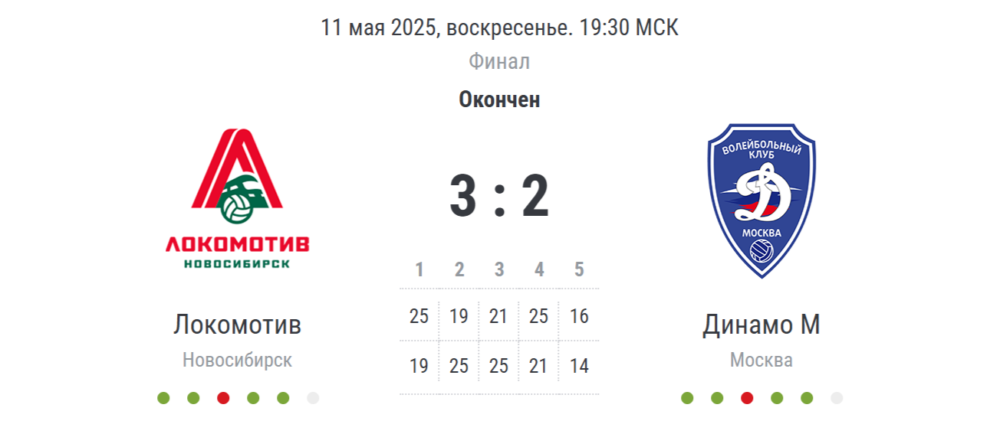

Кубок России

Финал Кубка России
В захватывающем финальном матче Кубка России "Локомотив" одержал историческую победу над "Динамо" со счётом 3:2. Матч проходил в напряжённой борьбе, где каждая команда показала высокий уровень игры.